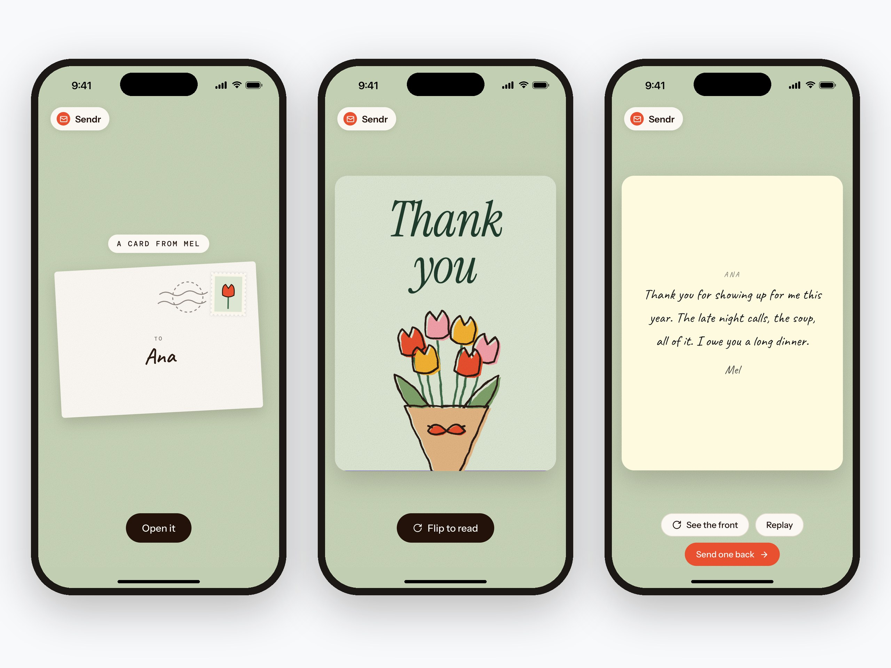
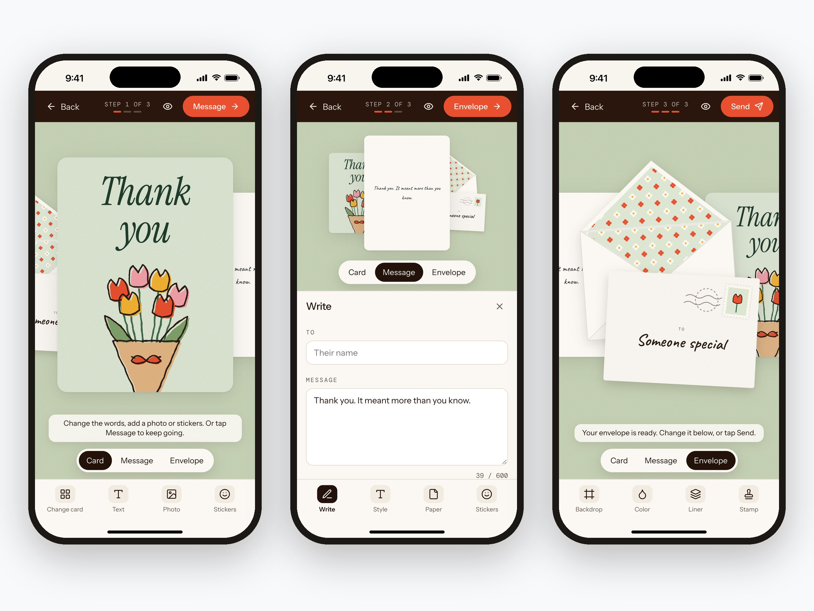
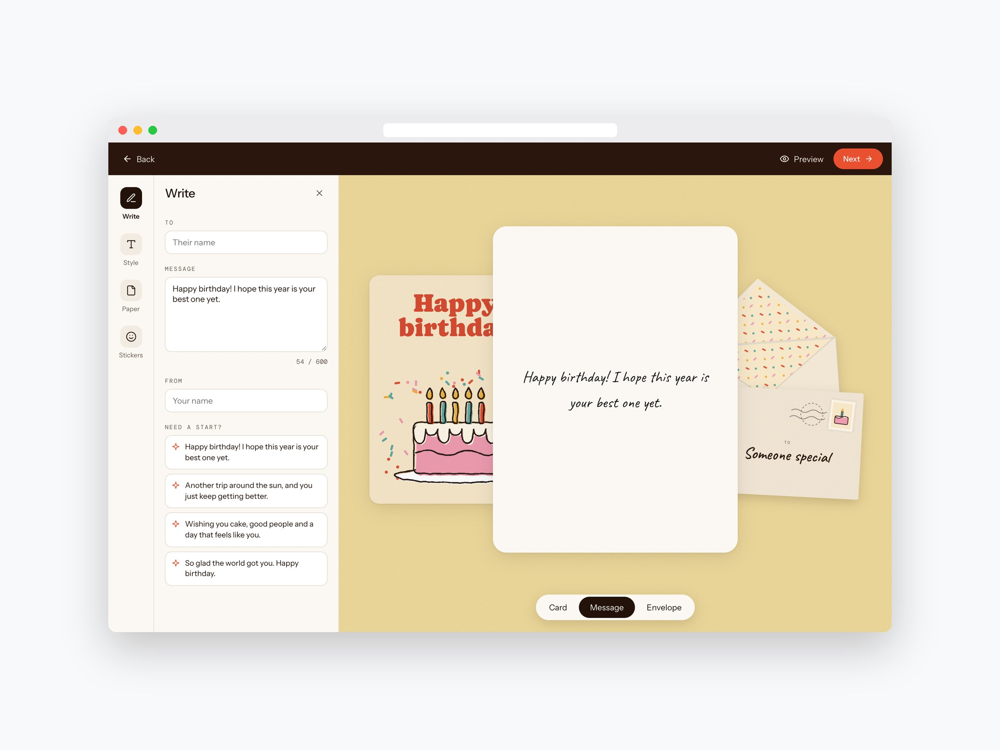
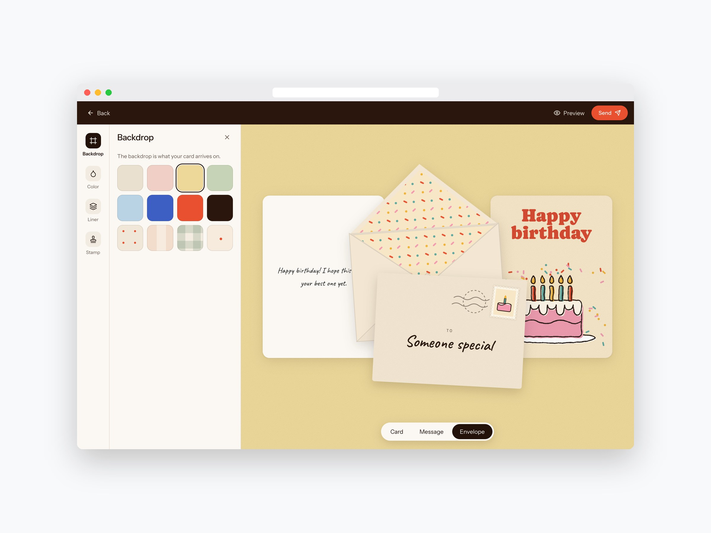
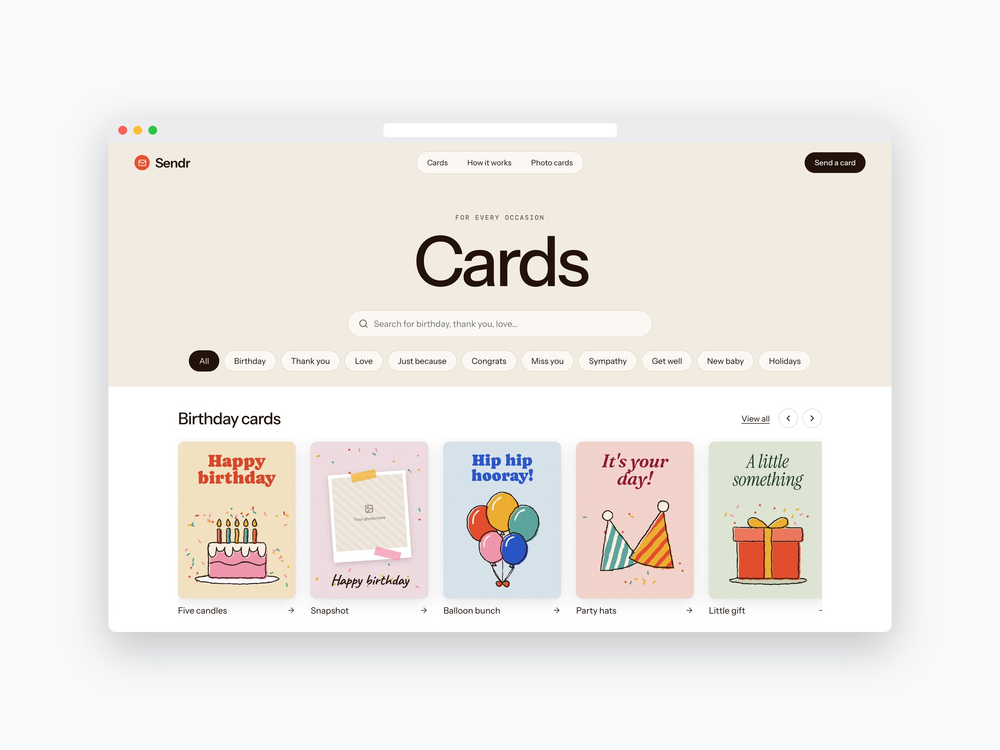
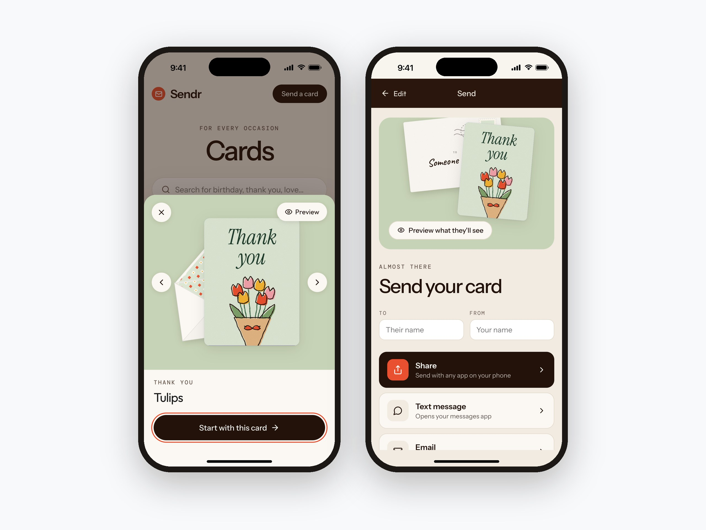
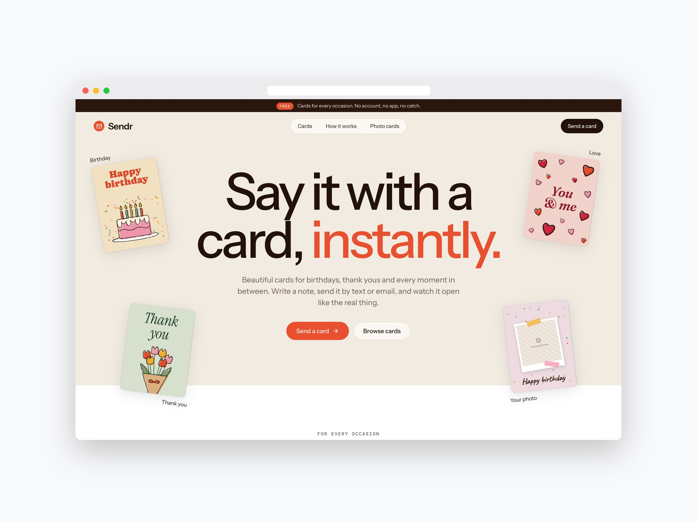

Sendr
Free, hand-drawn greeting cards you send by text or email in three steps, that open on a phone like the real thing.

A real card,
without the price.
Sendr is a greeting card you can send to someone you care about whenever and wherever you are. Pick a hand-drawn card, write a note, address the envelope, and send it as a link by text or email.
The person on the other end does not get a link to a picture. They get an envelope with their name on it, open it, and flip the card over to read what you wrote. I designed and built all of it, from the card art and the making flow to the moment it opens on their phone.
Hand-drawn style card designs across 10 occasions, from birthdays to sympathy
Card, message, envelope. One job per screen, then send
To make and send a card. No account, no app, no catch
Sending a card should not
cost more than the card.
I love cards and I love sending them. A card says something a text cannot: that you stopped and thought about this one person. But most of the services that send cards online charge too much for it, through paid cards, credits or subscriptions, and many ask you to make an account or download an app first.
The free options go the other way. They feel like templates: stock photos, clip art and a link that opens to an image. Nothing about them feels like a person made them for you.
Say it with a card, instantly.
The promise on the Sendr home pageMake it feel human,
then make it easy.
I owned the whole product: the brand, the card art, the making flow on desktop and phone, the opening animation and the code behind all of it. The first version launched in March 2026 with photo backgrounds and emoji. In November I redesigned it from the ground up around what I heard from people.
Two decisions carried the design.
Hand-drawn is the product
I replaced the stock photos with line work in a hand-drawn, riso-printed style: slightly uneven ink, paper grain, a little color off register. Every one of the 260 cards is built that way, so whatever you pick feels like it came from a person, not a template.
Design the opening, not just the making
Most people get the card on their phone, from a text. So the receiving moment got as much care as the making: an envelope addressed to them, a flap that opens, a card that slides out and flips over to the handwritten note, and a button to send one back.
What people needed
from a card.
I talked with people about how and why they send cards, reviewed the paid and free services they already used, and watched people make and send a card on the live site. Three things shaped the redesign.
They send and open on their phones
Cards get sent last minute, from wherever people are, and opened from a text. So the phone came first: a guided flow with one task per screen, a clear Step 1 of 3, and controls in a bottom sheet within reach of a thumb.
They want to be guided
An open editor with every tool at once left people unsure where to start. Now sending always starts with picking a card, each step tells you what to do next, and the message box suggests a first line for every occasion.
The note matters most
The art draws people in, but the message is why they send. Your words auto-fit the card as you type, and when it is full the card says so instead of shrinking the note until no one can read it.
What shipped.






Warm before you
pick a card.
The home page sets the tone the cards keep: warm cream paper, espresso ink, a tomato red for the one thing to do next, and big confident type. The cards themselves are the decoration. It is also a home screen app, so it opens like one and keeps working on a weak connection.

A card that feels like
someone made it.
Free, for real
No account, no app, no paid cards and no ads. Making and sending a card costs nothing, which was the whole reason to build it.
260 cards for every occasion
Birthdays, thank yous, love, congrats, sympathy, get well, new baby, holidays and more, 26 designs each, all in the same hand-drawn style.
Private by design
The card lives inside the link itself, so there is no database of anyone's messages. Card links carry no analytics, and the address is kept out of referrers.
Made to be passed on
Every card ends with Send one back, which takes the person who got it straight into making their own. Links from the first version still open, so no card someone sent is ever lost.